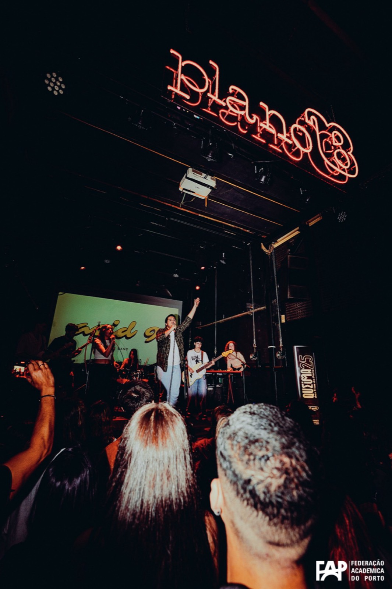

Música
A sonic exploration of texture, rhythm, and human resonance. From the ivory of the grand piano to the complex architecture of electronic production.
Produção Musical
O percurso na produção musical começa em 2024, após entrar no curso de Produção Musical na Rockschool Porto. O desejo partiu de uma necessidade criativa de levar as suas ideias musicais para um nível mais profissional.
Atualmente, já trabalhou em variados projetos de produção musical, composição e arranjo, pertencendo à equipa de Produção do produtor João André.

Experiência Profissional
- Assistente em estúdio em sessões do João André e Diana Martinez para artistas como: Nena, Carolina de Deus, Francisca Borges, Margarida, Beatriz Caixinha, Joana Almeirante, Quinta do Bill, Catarina Aires, Maria Fernandes, Saia, Larissa Gasper, Lara de Assys, Carolina Cardoso, entre outros (2025 - presente)
- Sessões de Songwriting em colaboração com Beatriz Caixinha (na equipa do produtor João André): Carolina de Deus, Francisca Borges, Margarida, Beatriz Caixinha, Joana Almeirante, Catarina Aires, Maria Fernandes, Bianca Barros, Matilde Machado, Salomão, Mariana Lucas, Ricardo Pereira, Saia (2025 - presente)
- Assistência Criação de conteúdo em sessões nos estúdios ARDA com a equipa do produtor João André (2025 - presente)
- Edições variadas e gravação de teclados em projetos de produção para a mesma equipa.
Creditada em alguns trabalhos como:

Songwriting
The narrative core. Words and melodies crafted to capture the fleeting moments of the human experience.

Ethereal Blue
headphones
The Long Goodbye
play_circlePiano

Classical foundation meets contemporary improvisation. The piano remains my primary vessel for emotional expression and composition.
Singing

Vocal textures ranging from intimate whispers to resonant soul. Exploring the voice as both a storyteller and an instrument.
Other Instruments

Guitar
Acoustic & Electric Explorations

Drums
Rhythmic Foundation
Performance
A selection of live music moments and stage energy captured during concerts, festivals, and studio performances.
Atuações com a banda ACID9 no Plano B, no Porto, em abril de 2025.

acid9_PlanoB_2.JPG

acid9_planoB_1.JPG

acid9_planoB_3.JPG

acid9_planoB_4.JPG

acid9_planoB_5.JPG
Atuações variadas.

acid9_gaia1.JPG

acid9_gaia2.JPG

performance_OJ.jpg

performance_RTP1.jpg

performance_anoNovoAlgarve.JPG

performance_auditorioFEUP.JPG